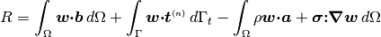
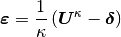
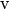
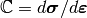
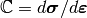

Solution Method¶
matmodlab exercises a material model directly by “driving” it through user specified paths. matmodlab computes an increment in deformation for a given step and requires that the material model update the stress in the material to the end of that step, given the current state and an increment in deformation. Because of the similarity of the material model interface in matmodlab with many commercial finite element codes, transitioning material models developed and tested in matmodlab to full finite element codes should be an easy process.
This guide has several purposes:
- Describe the role and importance of the material model in a finite element procedure
- Describe the solution method adopted by drivers in matmodlab (comparing to finite elements where applicable)
- Describe how to set up, run, and view results of a matmodlab simulation.
- Introduce material Validation and Verification testing procedures.
The Role of the Material Model in Continuum Mechanics¶
Conservation Laws¶
Conservation of mass, momentum, and energy are the central tenets of the analysis of the response of a continuous media to deformation and/or load. Each conservation law can be summarized by the statement that the time rate of change of a quantity in a continuous body is equal to the rate of production in the interior plus flux through the boundary
Mathematically, the conservation laws for a point in the continuum are
Conservation of mass

Conservtion of momentum per unit volume

Conservation of energy per unit volume

where  is the displacement,
is the displacement,  the mass
density,
the mass
density,  the stress,
the stress,  the rate of strain,
the rate of strain,
 the body force per unit volume,
the body force per unit volume,  the heat
flux,
the heat
flux,  the heat source, and
the heat source, and  is the internal energy
per unit mass.
is the internal energy
per unit mass.
In solid mechanics, mass is conserved trivially, and many problems are adiabatic or isotrhermal, so that only the momentum balance is explicitly solved
(1)
The balance of linear momentum is the continuum mechanics generalization of
Newton’s second law  .
.
The first term on the RHS of (1) represents the internal forces, which arise in the medium to resist imposed deformation. This resistance is a fundamental response of matter and is given by the divergence of the stress field.
The balance of linear momentum represents an initial boundary value problem for applications of interest in solid dynamics:
(2)
The Finite Element Method¶
The form of the momentum equation in (2) is termed the strong form.
The strong form of the initial BVP problem can also be expressed in the weak
form by introducing a test function  and integrating
over space
and integrating
over space
(3)
Integrating (3) by parts allows the traction boundary conditions to be incorporated in to the governing equations
(4)
This form of the IBVP is called the weak form. The weak form poses the IBVP as a integro-differential equation and eliminates singularities that may arise in the strong form. Traction boundary conditions are incorporated in the governing equations. The weak form forms the basis for finite element methods.
In the finite element method, forms of are assumed in
subdomains (elements) in  and displacements are sought such that
the force imbalance
and displacements are sought such that
the force imbalance  is minimized:
is minimized:
(5)
The equations of motion as described in (5) are not closed, but
require relationships relating to
Constitutive model  relationship between
and
relationship between
and
In the typical finite element procedure, the host finite element code passes to the constitutive routine the stress and material state at the beginning of a finite step (in time) and kinematic quantities at the end of the step. The constitutive routine is responsible for updating the stress to the end of the step. At the completion of the step, the host code then uses the updated stress to compute kinematic quantities at the end of the next step. This process is continued until the simulation is completed. The host finite element handles the allocation and management of all memory, including memory required for material variables.
Solution Procedure¶
In addition to providing a platform for material model developers to formulate and test constitutive routines, matmodlab aims to provide users of material models an independent platform to exercise, parameterize, and compare material responses against single element finite element simulations. To this end, the solution procedure in matmodlab is similar to that of the finite element method, in that the host code (matmodlab) provides to the constitutive routine a measure of deformation at the end of a finite step and expects the updated stress in return. However, rather than solve the momentum equation at the beginning of each step and advancing kinematic quantities to the step’s end, matmodlab retrieves updated kinematic quantities from user defined tables and/or functions.
The path through which a material is exercised is defined by piecewise
continuous “legs” in which components of the “control type”  are
specified at discrete points in time, shown in Figure 1. The
are used to obtain a sequence of piecewise constant strain rates that are used
to advance the kinematic state. Supported control types are strain, strain
rate, stress, stress rate, deformation gradient, displacement, and velocity.
“Mixed-modes” of strain and stress (and their rates) are supported. Components
of displacement and velocity control are applied only to the “+” faces of a
unit cube centered at the coordinate origin.
are
specified at discrete points in time, shown in Figure 1. The
are used to obtain a sequence of piecewise constant strain rates that are used
to advance the kinematic state. Supported control types are strain, strain
rate, stress, stress rate, deformation gradient, displacement, and velocity.
“Mixed-modes” of strain and stress (and their rates) are supported. Components
of displacement and velocity control are applied only to the “+” faces of a
unit cube centered at the coordinate origin.

The components of strain are defined by

where  is the right Cauchy stretch tensor, defined by the
polar decomposition of the deformation gradient
is the right Cauchy stretch tensor, defined by the
polar decomposition of the deformation gradient  , and
, and  is a user specified
“Seth-Hill” parameter that controls the strain definition. Choosing
is a user specified
“Seth-Hill” parameter that controls the strain definition. Choosing
 gives the Lagrange strain, which might be useful when testing
models cast in a reference coordinate system. The choice
gives the Lagrange strain, which might be useful when testing
models cast in a reference coordinate system. The choice  ,
which gives the engineering strain, is convenient when driving a problem over
the same strain path as was used in an experiment. The choice
,
which gives the engineering strain, is convenient when driving a problem over
the same strain path as was used in an experiment. The choice  corresponds to the logarithmic (Hencky) strain. Common values of
and the associated names for each (there is some ambiguity in
the names) are listed in Table 1
corresponds to the logarithmic (Hencky) strain. Common values of
and the associated names for each (there is some ambiguity in
the names) are listed in Table 1
|
Name(s) |
|---|---|
| -2 | Green |
| -1 | True, Cauchy |
| 0 | Logarithmic, Hencky, True |
| 1 | Engineering, Swainger |
| 2 | Lagrange, Almansi |
The volumetric strain ![\Strain[v]](_images/math/6aa50269ce068f1bf7b95b2168c6c69f28a2cf4a.png) is defined
is defined
(6)![\Strain[v] =
\begin{cases}
\OneOver{\kappa}\left(\Jacobian^{\kappa} - 1\right)
& \text{if }\kappa \ne 0 \\
\ln{\Jacobian} & \text{if }\kappa = 0
\end{cases}](_images/math/b8f18d1736744648ba521efb212d329f0ac001b0.png)
where the Jacobian  is the determinant of the deformation gradient.
is the determinant of the deformation gradient.
Each leg in the control table, from time  to
to  is
subdivided into a user-specified number of steps and the material model
evaluated at each step. When volumetric strain, deformation gradient,
displacement, or velocity are specified for a leg, matmodlab internally
determines the corresponding strain components. If a component of stress is
specified, matmodlab determines the strain increment that minimizes the
distance between the prescribed stress component and model response.
is
subdivided into a user-specified number of steps and the material model
evaluated at each step. When volumetric strain, deformation gradient,
displacement, or velocity are specified for a leg, matmodlab internally
determines the corresponding strain components. If a component of stress is
specified, matmodlab determines the strain increment that minimizes the
distance between the prescribed stress component and model response.
Strain Rate from Prescribed Stress¶
The approach to determining unknown components of the strain rate from the prescribed stress is an iterative scheme employing a multidimensional Newton’s method that satisfies
![\Stress\left(\dStrain\,[\text{v}]\right) = \PrescStress](_images/math/5c63f5c7079a17318611f72f258a19d86f170ec0.png)
where,  is a vector subscript array containing the components
for which stresses (or stress rates) are prescribed, and  are the components of prescribed stress.
are the components of prescribed stress.
Each iteration begins by determining the submatrix of the material stiffness
![\Stiffness_{\text{v}} = \Stiffness\,[\text{v}, \text{v}]](_images/math/c5cabb20679404e2e128f7aa211f9fd5df6d9ffb.png)
where  is the full stiffness matrix
. The value of
is the full stiffness matrix
. The value of
![\dStrain\,[\text{v}]](_images/math/db895293cf7d6e7b1ca1b27b3ca0aa3ec8629a76.png) is then updated according to
is then updated according to
![\dStrain\,[\text{v}] =
\dStrain\,[\text{v}] -
\Stiffness_{\text{v}}\DDotProd\Stress^{*}(\dStrain\,[\text{v}])/dt](_images/math/38f0eaf1e8146c4707aa235d11bbee9cc72f6200.png)
where
![\Stress^{*}(\dStrain\,[\text{v}]) = \Stress(\dStrain\,[\text{v}])
- \PrescStress](_images/math/df572715db1a4726ecf8129ed02784d319fa7767.png)
The Newton procedure will converge for valid stress states. However, it is possible to prescribe invalid stress state, e.g. a stress state beyond the material’s elastic limit. In these cases, the Newton procedure may not converge to within the acceptable tolerance and a Nelder-Mead simplex method is used as a back up procedure. A warning is logged in these cases.
Supported Drivers¶
Continuum Driver¶
As the name implies, the Continuum driver is designed to exercise the type of material models encountered in continuum mechanics, with an emphasis on solid materials. The solution method is similar to that of many finite element codes, so that material models developed and tested in matmodlab can be easily transitioned to them. `finish_me`_
Mechanical¶
Direct
- Strain rate
- Strain
- Deformation gradient
- Velocity
- Displacement
Inverse
- Stress
- Stress rate
Electrical¶
Electric field can be prescribed for testing piezoelectric models.
Direct
- Electric field